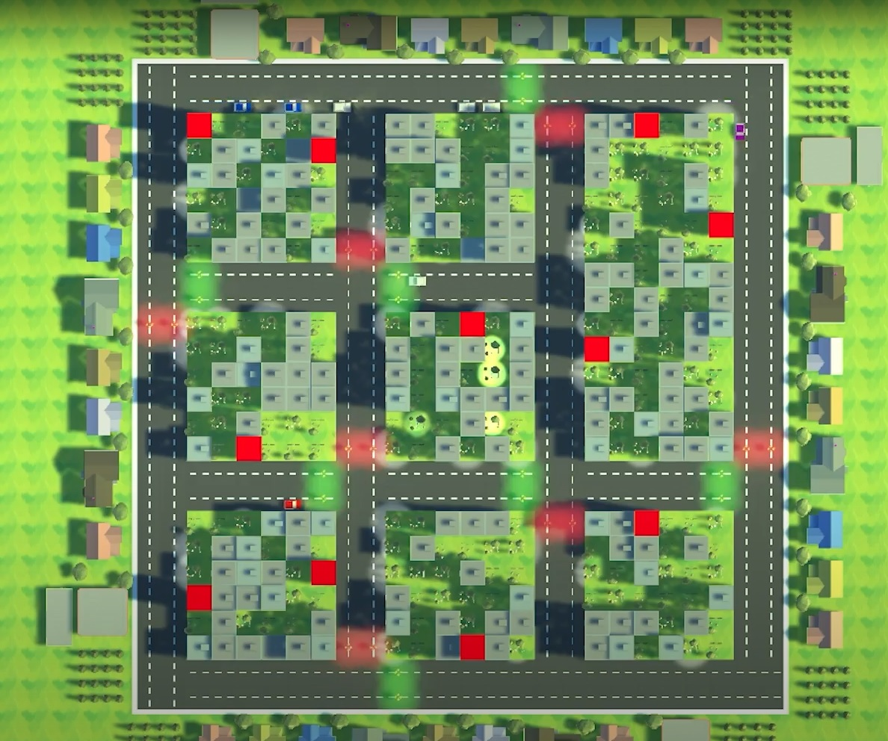
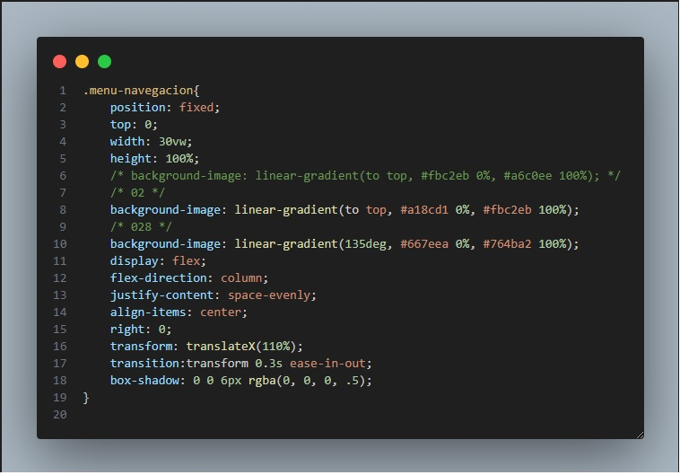
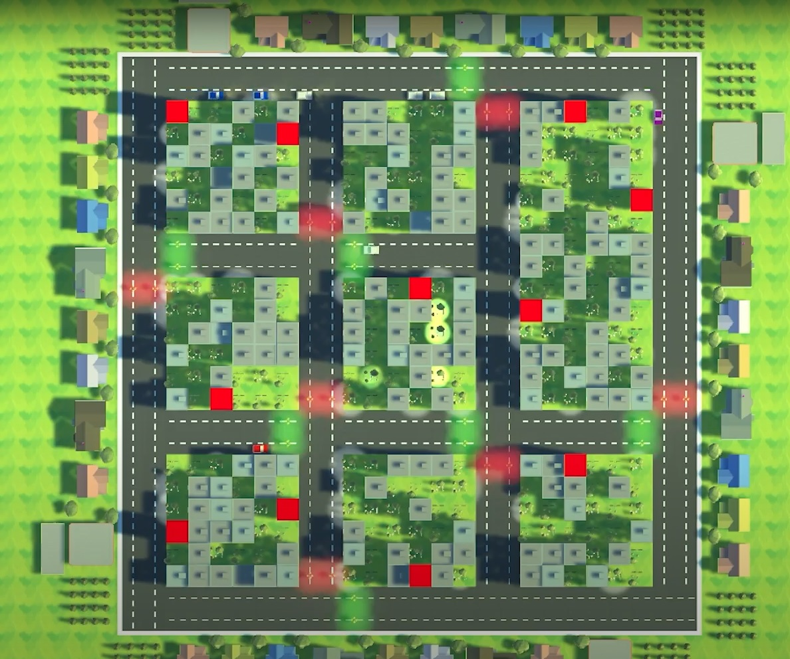
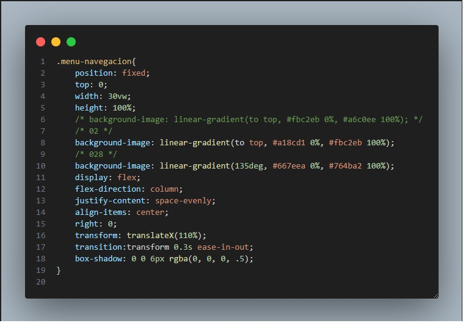

Experiencia

1 Diseño de un modelo de trafico
Se desarrollo una aplicacion con "Unity". Este era un modelo de trafico el cual permitia visualizar el flujo de vehiculos en una ciudad y como se comportaban para llegar a su destino sin causar accidentes, tomando en cuenta rutas, semaforos, direcciones y si existian vehiculos adyacentes o no. Se utilizo C# para la programacion.
2Plearnium
Se trabajo en un videojuego llamado Plearnium, el cual se desarrollo en Unity y se utilizo C# para la programacion. Se hizo un refactor del proyecto modificando archivos y creando nuevos scripts para mejorar el rendimiento del juego. Tambien se añadio mas funcionalidad a la pagina web del juego, incluyendo un sistema de login y registro y la visualizacion del leaderboard.
3Diseño de aplicacion movil
Se desarrollo una aplicacion con "Android Studio". Esta recopilaba datos del clima de una base de datos, informacion importante como Incendios, Temblores e Inundaciones y ademas tenia la capacidad de mandar notificaciones sobre estos eventos. Se conectaba mediante una pagina web enlazada a servicios de AWS como es S3 y EC2
4 Diseño de redes en Packet Tracer
Experiencia en "Cisco Packet Tracer" para la creacion y el diseño de redes.
Galeria

 




Que se necesita?

Auditorias con sistemas informaticos
Conocimiento en lenguajes de programacion